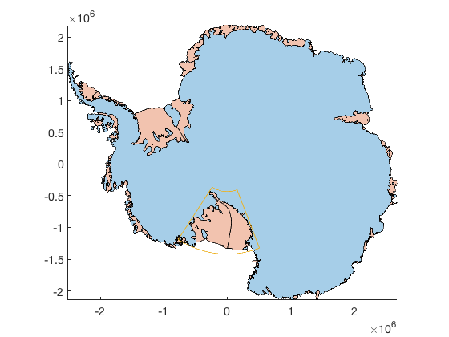
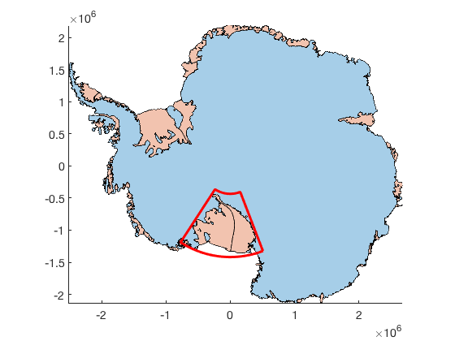
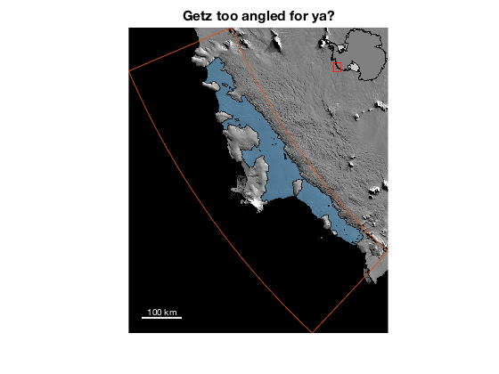
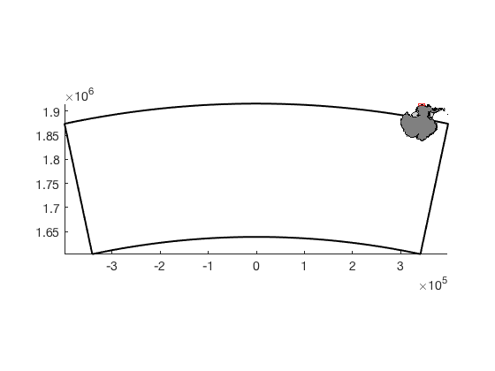
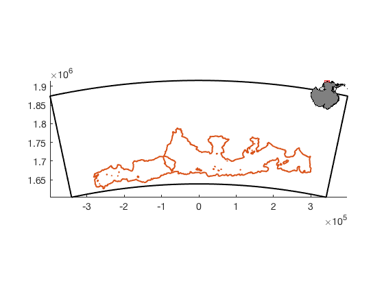
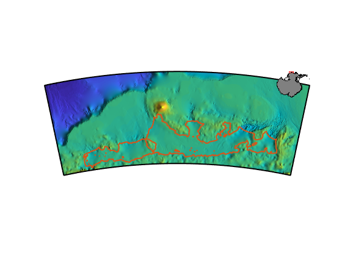
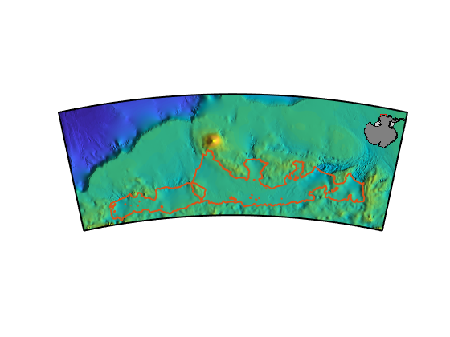

geoquadps documentation
geoquadps plots a geographic quadrangle in polar stereographic units.
This function is part of Antarctic Mapping Tools for Matlab (Greene et al., 2017). Click here for a complete list of functions in AMT.
Contents
Syntax
geoquadps(latlim,lonlim) geoquadps(...,LineProperty,LineValue) geoquadps(...,'meridian',meridian) h = geoquadps(...)
Description
geoquadps(latlim,lonlim) plots a geographic quadrangle bound by the limits of the two-element vectors latlim,lonlim. The latlim variable must be [SouthernLimit NorthernLimit] and lonlim must be [WesternLimit EasternLimit].
geoquadps(...,LineProperty,LineValue) specifies any line properties.
geoquadps(...,'meridian',meridian) specifies a meridian longitude along which the polar stereographic projection is centered. Default meridian is 0, which puts Fimbul Ice Shelf at the top of the map. To center the map on your quandrangle, try mean(lonlim) as the meridian value.
h = geoquadps(...) returns a handle h of the plotted object.
Example 1: Standard projection
Starting with an outline from antbounds:
antbounds('gl','polyshape') antbounds('shelves','polyshape')
Say you want to mark a quadrangle around Ross Ice Shelf, which extends from about 77S to 86S, and from 159E to 147W:
geoquadps([-77 -86],[159 -147])
The default thin line is tough to see in this context. Want to format it to make it more clear? Make it a big fat red line like this:
geoquadps([-77 -86],[159 -147],'linewidth',3,'color','red')
Example 2: Rotated projection
Sometimes you might want to plot things with a different projection than the standard polar stereographic with the prime meridian at the top of the page. Getz Ice Shelf in particular is like this, because if you take a look,
figure antbounds('getz','polyshape') geoquadps([-75 -72.5],[-137 -113]) axis tight off modismoaps('contrast','low') scalebarps('color','w') mapzoomps('ne','frame','off') title 'Getz too angled for ya?'
Getz is at a ~45 degree angle in the standard projection and you might instead want it long-ways or tall-ways. Above, I called geoquadps with the latitude and longitude limits that we'll use for the next projection.
figure h = mapzoomps([-75 -72.5],[-137 -113],'ne','frame','off'); geoquadps([-75 -72.5],[-137 -113],'meridian',-125,... 'linewidth',2,'color','k')
In the figure above, you see the same geoquad that encompasses Getz is now centered on x = 0 meters (and if you take a look at the y axis, it's worth noting that the South Pole is still at y = 0).
Here's the outline of Getz Ice Shelf with the meridian at 125 W:
% Get Getz outline data: [lat,lon] = antbounds_data('getz'); % Plot the Getz outline with the meridian at 125 W: plotps(lat,lon,'meridian',-125,'linewidth',2)
For a little further context, plot the bathymetry from IBCSO.
[Lat,Lon] = meshgrid(-75:0.01:-72.5,-137:0.01:-113); Z = ibcso_interp(Lat,Lon); pcolorps(Lat,Lon,Z,'meridian',-125); shadem(3) axis off
Note the inset map is in an awkard position. To move it, make sure you get a handle when you call h = mapzoomps(...) as we did above. The position of the lower left corner of the inset map is defined by
h.Position
ans =
0.8084 0.6189 0.0966 0.1014
Where that corresponds to
[lowerleft_x lowerleft_y insetwidth insetheight]
and units are from 0 to 1, relative to the width of the entire figure. So to move the inset map down a bit, try
h.Position(2) = 0.56;
And similarly, you can set the inset map's horizontal location as well as its width and height with h.Position.
Citing AMT
If this function or any other part of Antarctic Mapping Tools is useful for you, please cite the paper that describes AMT.
Greene, C. A., Gwyther, D. E., & Blankenship, D. D. Antarctic Mapping Tools for Matlab. Computers & Geosciences. 104 (2017) pp.151-157. doi:10.1016/j.cageo.2016.08.003.
Author Info
This function and supporting documentation were written by Chad A. Greene of the University of Texas Institute for Geophysics (UTIG), August 2018, for inclusion in the Antarctic Mapping Tools package.